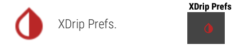
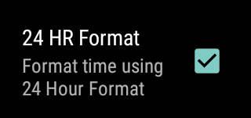
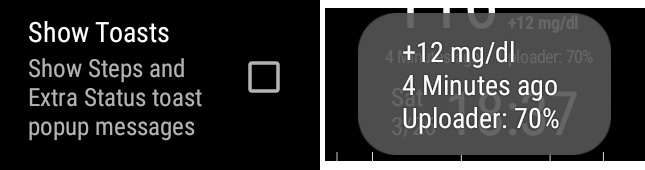
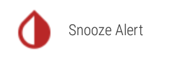
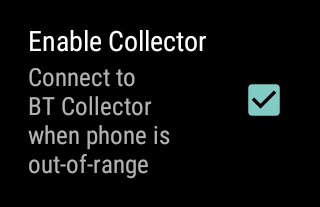
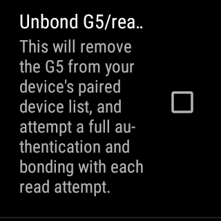

Use Wear Extension
You will find the reference documentation here.
Discover Wear Extension⌁
Four native watchfaces are available from xDrip+.
| XDrip | XDrip(BigChart) |
|---|---|
 |
|
| XDrip(Large) | XDrip(Circle) |
 |
 |
Graph based watchfaces contain some common elements with the xDrip+ main display.
- What's the last measured BG value.
What's the BG difference with the previous value received.
What's the trend in respect with the previous measurement. - A status line.
- A BG graph.

Double tapping the graph changes the time scale.

Since xDrip+ wear extension contains some of the app code, you will find xDrip+ menu items on the watch. You will find them inside the watch apps, some can also be accessed from the watch graph using the three dots menu present on all watchfaces.

xDrip Prefs.⌁
This menu contains display options for your watchface.
When the watch is setup in standalone collector, more items will be visible. See below.

Dark theme shows a black background and white text/graph. Disabling this reverts colors.
Refresh on change updates the watchface every data change (5 minutes minimum). If you disable it the watch will update its watchface every minute (will use more battery).
Show treatment adds treatment dots on the graph watchfaces.

24 hours format forces this time format to display.

Show date also shows the date on the watchface.

If your watch is setup to use its own locale (language) you can force it to use the phone settings.

Toasts are pop-up messages, you can enable them and have extra information tapping steps and status on the watch.

If your watch supports it and you authorized xDrip Prefs. to access sensor data on the watch you will have the step counter on the watchface and can have steps data displayed on your phone xDrip+.

If your watch supports it and you authorized xDrip Prefs. to access sensor data on the watch you will have hearth rate on the watchface and can have hearth rate data displayed on your phone xDrip+.
If you use an open source closed loop system (like AAPS) broadcasting data to xDrip+, you can have loop status added to the status line.

By default the watchface will display the collecting device battery as uploader or wear. This is a legacy definition that doesn't add value if you're not using xDrip+ as master: it will not display the master phone battery level nor an eventual bridge device battery but only your phone and watch battery.

Allows you to display cards (alerts) with a plain background to improve readability.

You can change the font size of the status line. 10 or 12 points.

You can change the chart timeframe, same as double tapping it.

In this menu you'll find customizations for the circle watchface.

Low color.

On xDrip+ and xDrip+ Large, change the divider (status line) color to match backround.
Force update is available for Wear 2.0 and above watches if available for the current version and enabled as explained here.

Demigod is available for patched watches.

Keypad Treatment⌁
Keypad treatment is identical to xDrip+ syringe icon.


Spoken treatment⌁
Spoken treatment is identical to xDrip+.

Snooze Alert⌁
Not all alerts and alarms are available on the watch.

On wear 1.x alarms and alerts that drive to to opening on the phone means you need to perform snooze from within the phone xDrip+ app.
On wear 2.x and above alerts might show as notifications and you will need to manually open the snooze alert phone app or snooze them from the phone xDrip+ app.

Standalone collector mode⌁
xDrip Prefs. menu will contain additional information mirrored from xDrip+ on the phone when both are connected together.
Validation⌁
A validation mechanism will make sure both use the same settings. If the watch doesn't accept the settings change from xDrip+, they will be modified automatically to match the watch settings when both are connected.
- Settings are modified on the phone
- Changes are sent to the watch, when connected
- Watch tries to implement settings modifications
- Watch settings are sent back to the phone (modified or not)
- Phone settings are updated to reflect the watch settings, when connected

This also works the other way round. If the watch settings are modified, they will be sent to the phone when connected. xDrip+ on the phone will validate the changes and send them back to the watch as a confirmation.
- Settings are modified on the watch
- Changes are sent to the phone, when connected
- xDrip+ on the phone validates settings modifications
- Phone settings are sent back to the watch (validated or not)
- Watch settings are updated to reflect the phone settings, when connected

xDrip Prefs.⌁
When standalone collector is enabled you'll find additional entries in the menu.
BT collector is an information on which hardware data source collector is set on your phone xDrip+.

Enable collector matches the setting in Wear integration.

So does force collector. If the watch is not connected to the phone and you lost connection to your sensor you can try to trigger this to force a reconnection attempt.

When in standalone collector mode you can use the watch local alerts (some). They will be snoozed on the watch.

Including persistent high alert.

If your watch has a speaker it can also ring the alarms.

If you're connecting to a G5 or G6 you'll find additional settings.

These are replications of the phone G5/G6 Debug Settings - Old G5 Collector Settings.



Force screen on makes sure the watch will be fully awake when scanning.